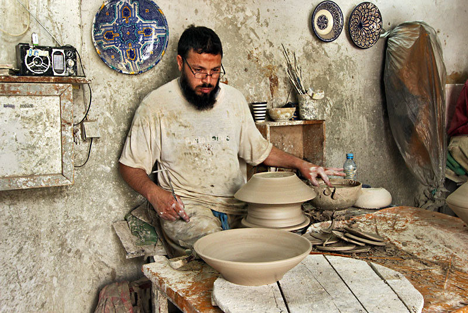
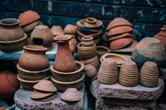
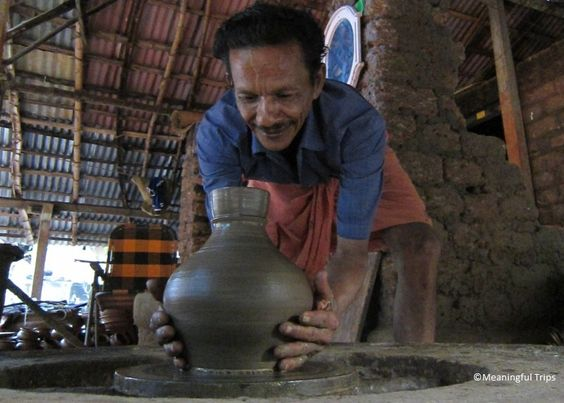

Who are we?
A company seeking to use the flourishing ceramic trade to benefit the poor of India.



A company seeking to use the flourishing ceramic trade to benefit the poor of India.
We sell high quality household ceramics produced excluisvely in India by small cermaic manufacutres in towns and villages with a poor population in need. All with the purpose to both stimulate the local economy and ensure proceeds go back into the community to meet the basic survival needs of the poor.
Through working directly with artisans of impoverished areas, innovations in material science, and ensuring our revenue goes back into the community. Pot for Poverty hopes to stimulate local enconomies of India, sell high quality household ceramics globally, and tend to the immediate daily needs of the 270 million impoverished in India.
Education is the key to success. Not everyone in the world is given their equal entitlement to education. Our mission is to deliver an education to those who do not have access to one. The underpaid pot makers in India struggle with many symptoms of poverty, one way to combat this illness as a whole is by educating the youth of these struggling families. We want to make an impact on the families that have been working hard for generations by giving their youth an education. Our organization's goal is to build sustainable schools in these small communities that give the youth an opportunity to break the cycle of poverty that has been ongoing in their families for generations.